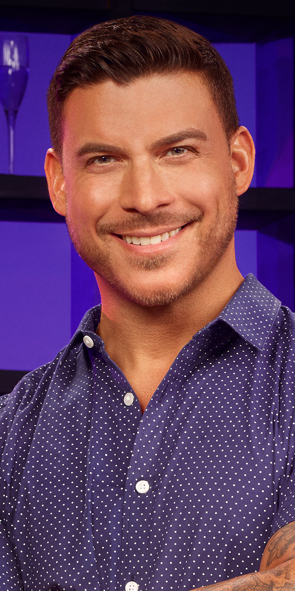
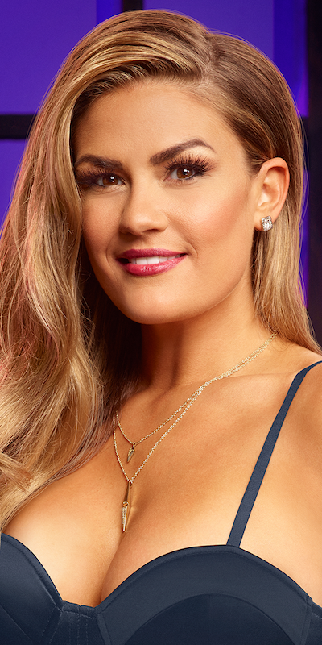
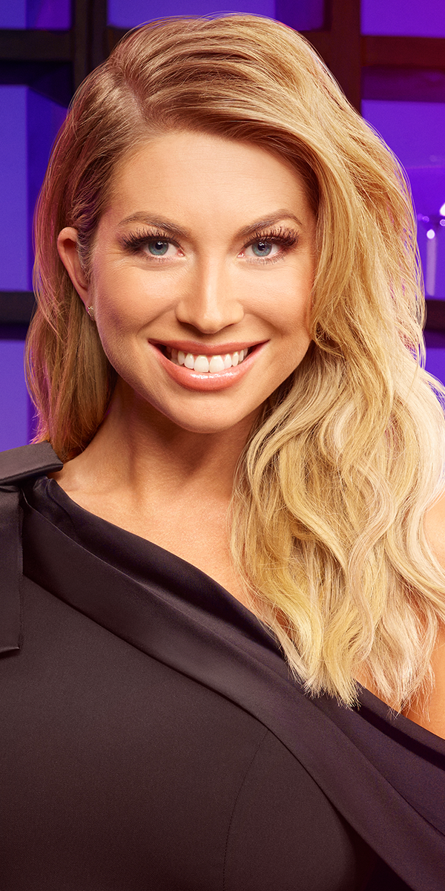
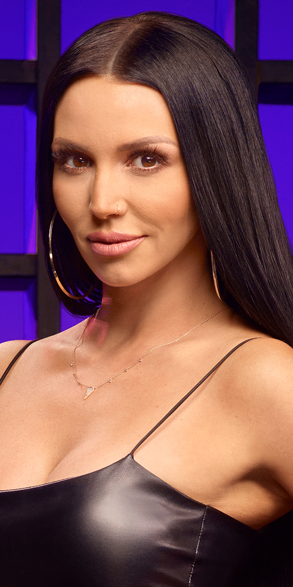
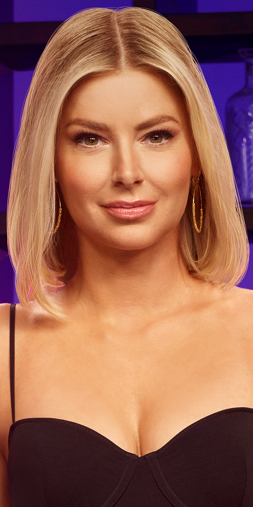
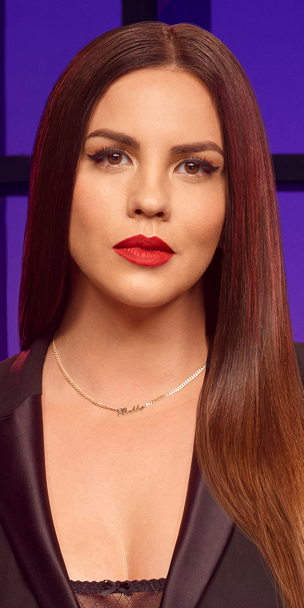
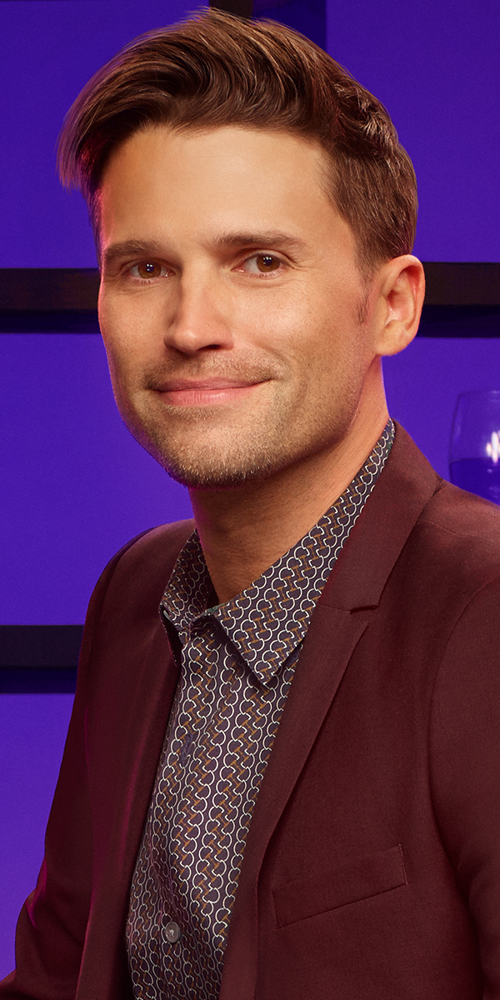

The Queen herself: Lisa Vanderpump. Matriarch of Vanderpump Rules and owner of Sur

Vanderpump Rule's resident bad guy, Jax Taylor. Serial cheater and pathological liar extraordinaire!

Brittany Cartwright: left her family in Kentucky to move in with boyfriend (now fiancé) Jax in LA.

Queen of birthdays and one-liners, Stassi Schroeder.

Scheana Marie: the woman responsible for starting the show after having an affair with the husband of Lisa Vanderpump's friend/RHOBH castmate.

Tom Sandoval: not afraid to express his emotions or his impressive sense of style, and is an admirably loyal friend.

Ariana Madix is an aspiring actress and comic, known for her sharp wit and intellect.

James Kennedy, the youngest of the group, is right behind Jax in the running for Pump Rules' least likable member.

Katie Maloney, married to Tom Schwartz, has an alter-ego named Tequila Katie who emerges after an excess of, you guessed it, tequila.

Katie's husband, Tom, is known for his boyish features and love of jägerbombs.

Kristen Doute has rightfully earned the title "crazy Kristen" for her ability to detect lies and expose the truth.

Lala Kent is Vanderpump Rules' champion of girl-power and confidence.